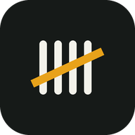

ÇeteleSayaç ve gün sayacıGizlilik politikası
Verilerin yalnızca telefonunda kalır
SON GÜNCELLEME · 03.11.2026
Çetele (Android uygulaması com.fatihgoren.cetele ve bu web sitesi) hiçbir kişisel veri toplamaz, saklamaz ya da paylaşmaz.
01Hangi veriler işleniyor?
Oluşturduğun çetelelerin adları, sayıları, hedefleri ve başlangıç tarihleri yalnızca kendi cihazında saklanır. Bu veriler hiçbir sunucuya gönderilmez.
02Üçüncü taraflar
Uygulamada reklam, analiz, çökme raporlama ya da hesap sistemi yoktur. Uygulama internet bağlantısı kullanmaz.
03İzinler
Uygulama yalnızca titreşimi (dokunsal geri bildirim) ve sayarken ekranın açık kalmasını sağlayan sistem özelliklerini kullanır.
04Verilerin silinmesi
Uygulamayı kaldırdığında ya da uygulama verilerini temizlediğinde tüm çeteleler cihazından kalıcı olarak silinir.
05Çocuklar
Uygulama, çocuklar dahil hiçbir kullanıcıdan veri toplamaz.
06İletişim
Soruların için: fatihgoren61@gmail.com